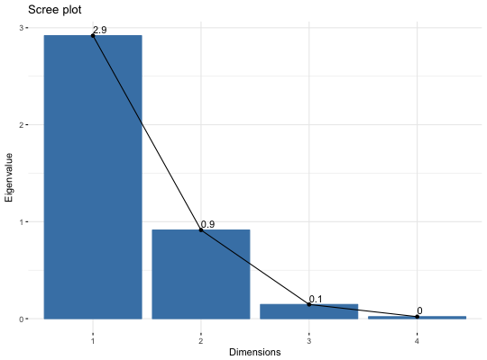
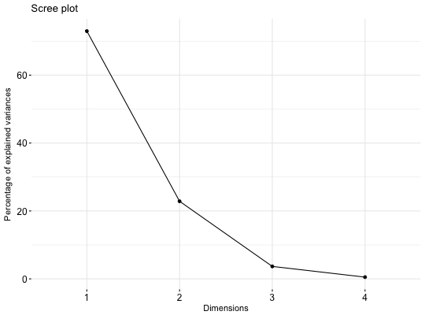

Eigenvalues correspond to the amount of the variation explained by each principal component (PC).
These functions support the results of Principal Component Analysis (PCA), Correspondence Analysis (CA), Multiple Correspondence Analysis (MCA), Factor Analysis of Mixed Data (FAMD), Multiple Factor Analysis (MFA) and Hierarchical Multiple Factor Analysis (HMFA) functions.
get_eig(X) get_eigenvalue(X) fviz_eig(X, choice = c("variance", "eigenvalue"), geom = c("bar", "line"), barfill = "steelblue", barcolor = "steelblue", linecolor = "black", ncp = 10, addlabels = FALSE, hjust = 0, main = NULL, xlab = NULL, ylab = NULL, ggtheme = theme_minimal(), ...) fviz_screeplot(...)
http://www.sthda.com/english/
fviz_pca, fviz_ca,
fviz_mca, fviz_mfa, fviz_hmfa
# Principal Component Analysis # ++++++++++++++++++++++++++ data(iris) res.pca <- prcomp(iris[, -5], scale = TRUE) # Extract eigenvalues/variances get_eig(res.pca)#> eigenvalue variance.percent cumulative.variance.percent #> Dim.1 2.91849782 72.9624454 72.96245 #> Dim.2 0.91403047 22.8507618 95.81321 #> Dim.3 0.14675688 3.6689219 99.48213 #> Dim.4 0.02071484 0.5178709 100.00000# Default plot fviz_eig(res.pca, addlabels = TRUE, ylim = c(0, 85))# Scree plot - Eigenvalues fviz_eig(res.pca, choice = "eigenvalue", addlabels=TRUE)# Use only bar or line plot: geom = "bar" or geom = "line" fviz_eig(res.pca, geom="line")## Not run: ------------------------------------ # # # Correspondence Analysis # # +++++++++++++++++++++++++++++++++ # library(FactoMineR) # data(housetasks) # res.ca <- CA(housetasks, graph = FALSE) # get_eig(res.ca) # fviz_eig(res.ca, linecolor = "#FC4E07", # barcolor = "#00AFBB", barfill = "#00AFBB") # # # Multiple Correspondence Analysis # # +++++++++++++++++++++++++++++++++ # library(FactoMineR) # data(poison) # res.mca <- MCA(poison, quanti.sup = 1:2, # quali.sup = 3:4, graph=FALSE) # get_eig(res.mca) # fviz_eig(res.mca, linecolor = "#FC4E07", # barcolor = "#2E9FDF", barfill = "#2E9FDF") ## ---------------------------------------------